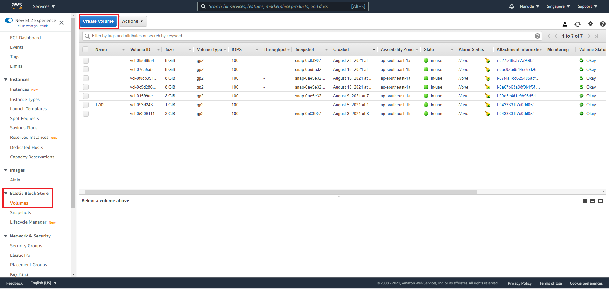
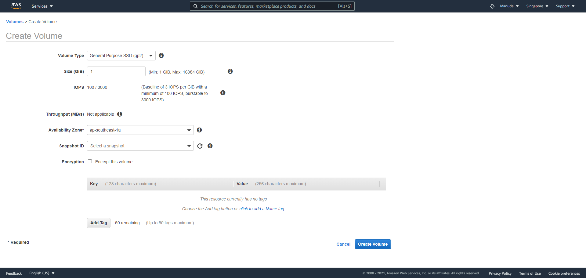
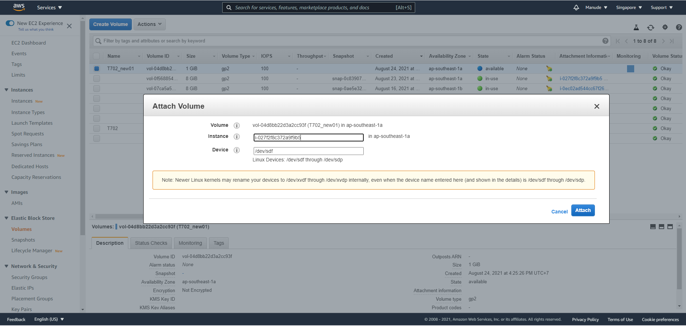
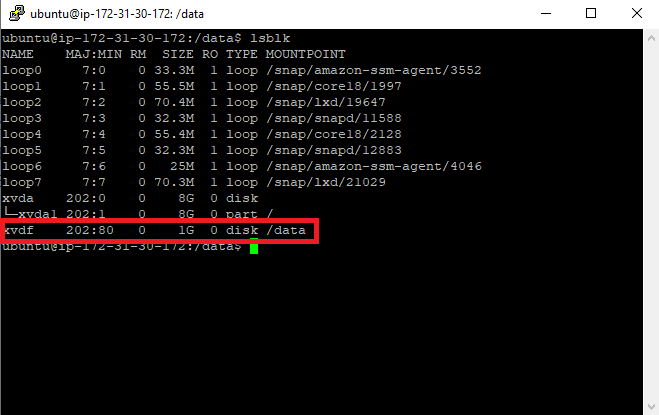
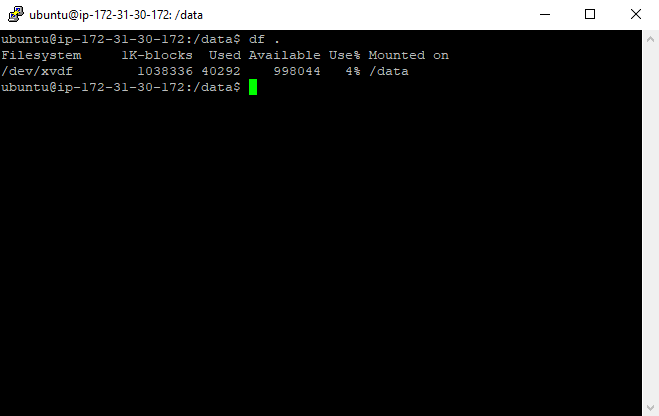
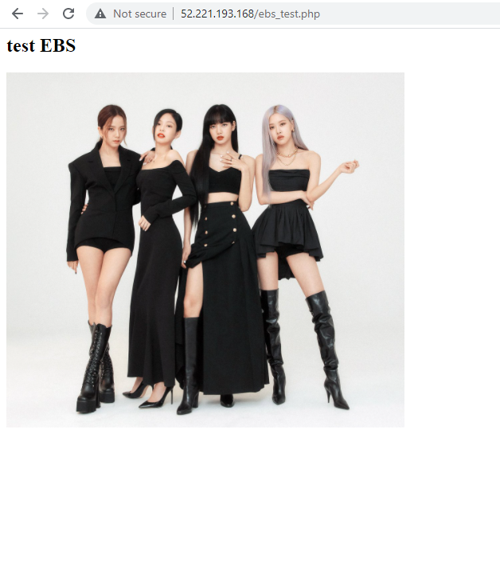

EBS จะอยู่ใน EC2 เปรียบเหมือน HDD หรือ USB ขนาดใหญ่ สามารถนำไปเสียบกับเครื่อง Sever ที่อยู่ในบริการของ Amazon เครื่องใดก็ได้ โดยการ Create และไปกระทั่งการใช้งานมีดังนี้
ขั้นตอนแรกให้เราเข้าไปที่ EC2 แล้วเลื่อนลงมาด้านล่างจะเห็นคำว่า Elastic Block Store ให้คลิ๊กที่ Volume และต่อมาให้เลือกที่ Create
ต่อมาให้เราเลือก ขนาดที่ต้องการ และ Availability Zone ตามเครื่อง server เสร็จแล้วกด create
เมื่อสร้างเสร็จต่อมาจะทำการเชื่อมต่อกับเครื่อง server ที่ต้องการ เลือก EBS ที่พึ่งสร้างมาต่อมา เลือกที่ Action->Attach จะปรากฏ ตามรูปด้านบนให้ทำการเลือกเครื่องที่ต้องการเชื่อมต่อ และเมื่อเชื่อมต่อเรียบร้อยจะไปอยู่ใน /dev/sdf จากนั้นรอจนกว่าจะเชื่อมต่อเสร็จ ต่อมาให้เชื่อมต่อเครื่อง server โดยใช้ putty เพื่อเข้าไป mount EBS ที่พึ่งเชื่อมต่อไป ให้พิมพ์ lsblk จะปรากฏรูปดังนี้ ในกรอบแดงจะเห็น drive ใม่ที่เราพึ่งนำมาเชื่อมต่อ
ต่อมาให้พิมพ์ sudo mkfs -t xfs /dev/xvdf เป็นการสร้าง filesystem ขึ้นมา เมื่อเสร็จให้พิมพ์ sudo file -s /dev/xvdf เพื่อตรวจสอบความเรียบร้อยว่า Drive พร้อมใช้งานแล้ว หลังจากนั้นให้ทำการส้ราง Directory ใหม่ โดย พิมพ์ sudo mkdir /your_directory_name และในขั้นตอนสุดท้าย เราจะทำการ mount drive ลงไปใน directory ที่เราพึ่งสร้างมา โดยพิมพ์ sudo mount /dev/xvdf /your_directory_name เสร็จแล้วให้ตรวจสอบอีกที โดยพิมพ์ cd /your_directory_name และพิมพ์ df . จะปรากฏตามภาพด้านล่างถือว่าใช้ได้
ต่อมาเราจะลอง upload รูปภาพลงไปใน drive ด้านบนและลองให้แสดงผลออกมาผ่าน file ebs_test.php โดยเราจะเข้าไปจัดการ file โดยใช้ FileZilla แต่ก่อนจะ upload file ให้เราพิมพ์ sudo chmod 777 . บน directory ดังกล่าวด้วย ต่อมาได้เพิ่ม file ebs_test.php ใน /var/www/html และลองดึงรูปจาก drive มาใช้จะได้ผลลัพธิ์ดังภาพด้านล่าง เป็นอันจบการ review EBS
